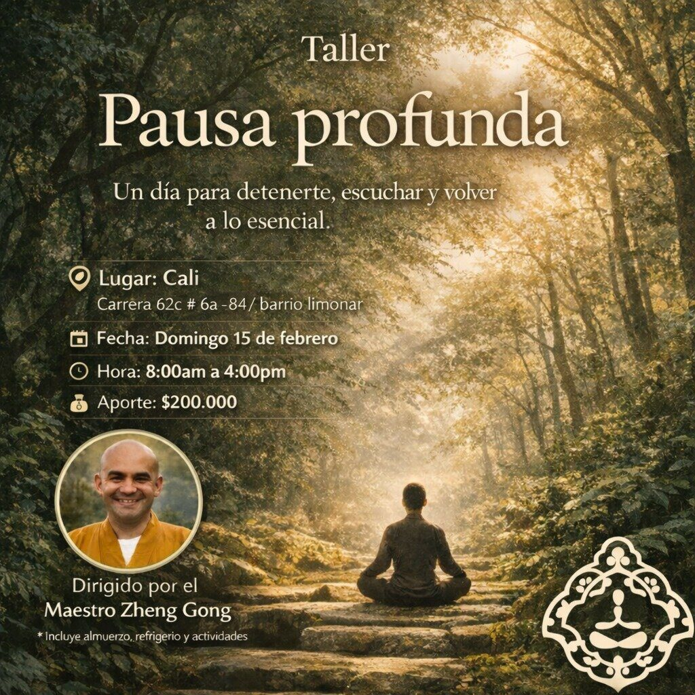

Evento finalizado
Taller
Pausa Profunda – Cali

¿Sientes que necesitas bajar el ritmo, respirar con más calma y volver a lo esencial?
Pausa Profunda fue un taller de un día para detenerse, escuchar y habitar el presente con mayor claridad. Un espacio para soltar el cansancio, calmar el ruido interior y reconectar, guiado desde una perspectiva budista, sencilla y profunda.
Pausa no es escapar… es aprender a estar.
Dirigido por el Maestro Zheng Gong.